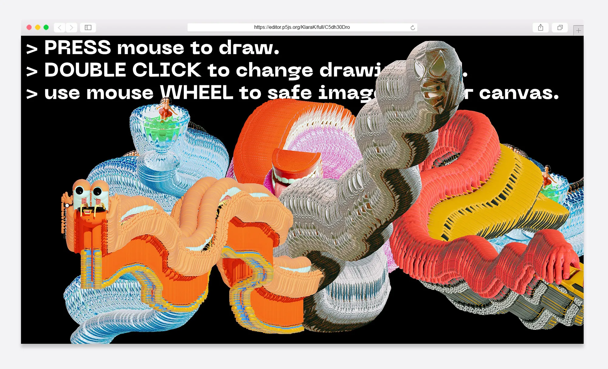
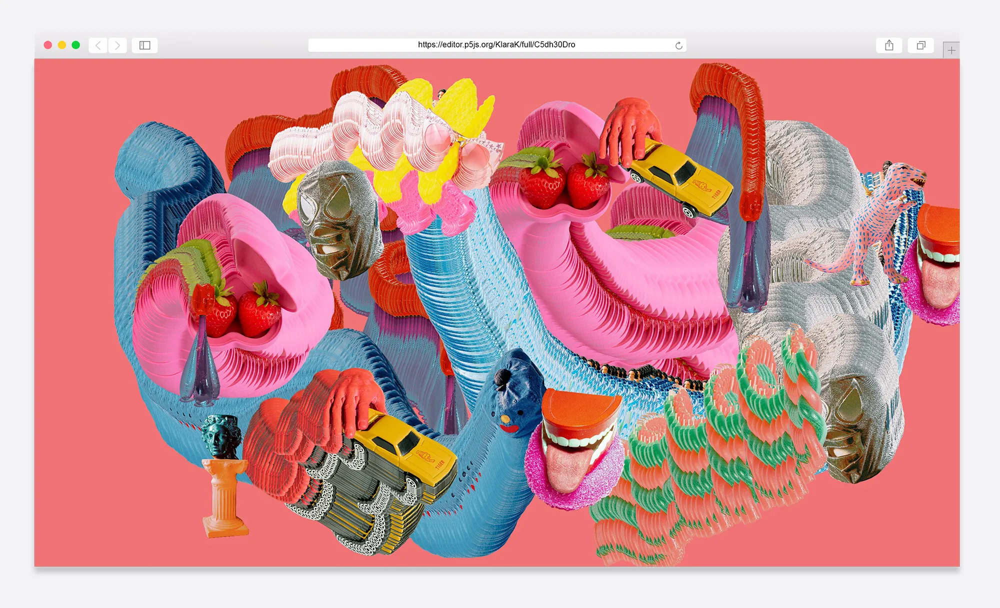
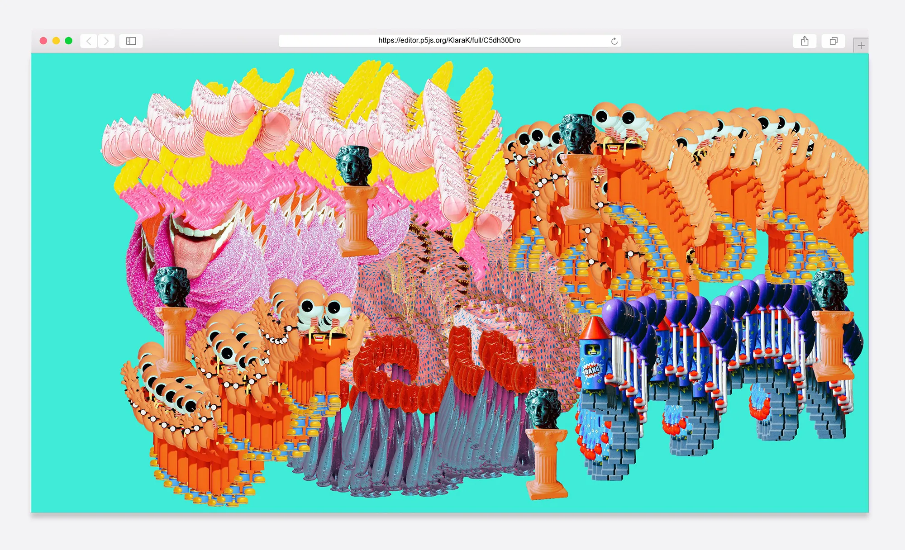
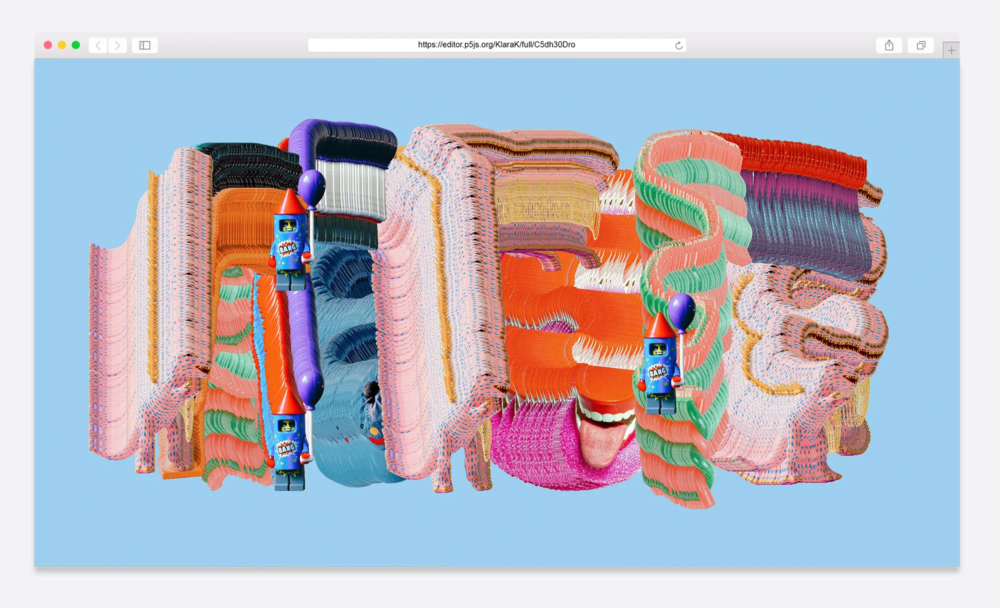

drawing.machine
drawing.machine ist eine programmierte Anwendung zum Malen mit Objekten – zum Experimentieren und Neu-interpretieren. Statt mit Pinsel oder Stift entstehen die Zeichnungen aus eingescannten Alltagsgegenständen, die sich beim Zeichnen zu neuen, verspielten Formen verweben.
Zeichentool, Creative Coding